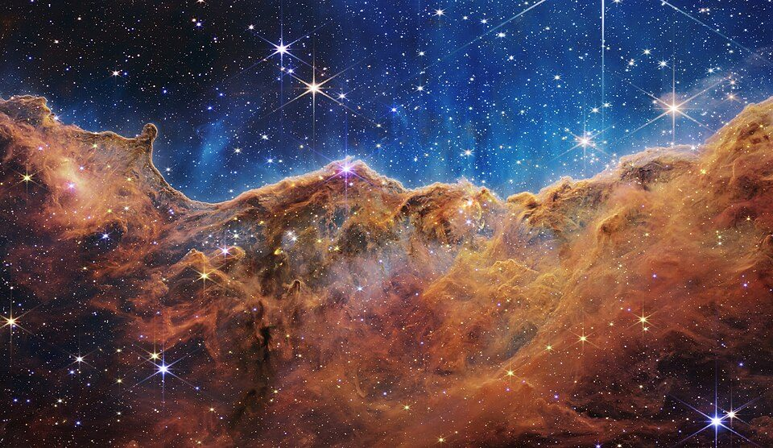

Enciclopedia del cosmos · 49 fichas
Universo
Una enciclopedia del cosmos: del Sol a las galaxias más lejanas, con fotos reales de telescopios y sondas, cifras, curiosidades y simuladores.
Cifras para empezar
- 13.800 millones de añosedad del universo
- 2 billonesgalaxias en el universo observable (estimación)
- 8 min 20 starda la luz del Sol en llegar a la Tierra
- 299.792 km/svelocidad de la luz en el vacío
- 4,24 años luzhasta Próxima Centauri, la estrella más cercana
- −270 °Ctemperatura del fondo cósmico
Secciones
 14 fichasSistema solarEl Sol, los ocho planetas, sus lunas, los planetas enanos, los asteroides y los cometas: todo lo que gira a nuestro alrededor.
14 fichasSistema solarEl Sol, los ocho planetas, sus lunas, los planetas enanos, los asteroides y los cometas: todo lo que gira a nuestro alrededor.
7 fichasEstrellasCómo nacen, brillan y mueren las estrellas: nebulosas, gigantes rojas, supernovas, estrellas de neutrones, agujeros negros y planetas en otros soles. 5 fichasGalaxiasLa Vía Láctea, Andrómeda y los billones de galaxias del universo: sus formas, sus choques y las grandes estructuras que forman.
5 fichasGalaxiasLa Vía Láctea, Andrómeda y los billones de galaxias del universo: sus formas, sus choques y las grandes estructuras que forman. 5 fichasCosmologíaEl origen, la expansión, la composición y el destino del universo, contados de forma clara: del Big Bang a la energía oscura.
5 fichasCosmologíaEl origen, la expansión, la composición y el destino del universo, contados de forma clara: del Big Bang a la energía oscura. 6 fichasExploración espacialDel Sputnik a Artemis: la carrera espacial, los viajes a la Luna, las sondas que han visitado todos los planetas, los grandes telescopios y la vida en órbita.
6 fichasExploración espacialDel Sputnik a Artemis: la carrera espacial, los viajes a la Luna, las sondas que han visitado todos los planetas, los grandes telescopios y la vida en órbita. 6 fichasObservar el cieloGuía práctica para mirar el cielo a simple vista, con prismáticos o con telescopio: constelaciones, eclipses, lluvias de estrellas y el calendario de los próximos meses.
6 fichasObservar el cieloGuía práctica para mirar el cielo a simple vista, con prismáticos o con telescopio: constelaciones, eclipses, lluvias de estrellas y el calendario de los próximos meses. 6 fichasCuriosidades y cifrasSimuladores, récords, distancias, anécdotas, descubrimientos sorprendentes y falsos mitos sobre el universo.
6 fichasCuriosidades y cifrasSimuladores, récords, distancias, anécdotas, descubrimientos sorprendentes y falsos mitos sobre el universo.